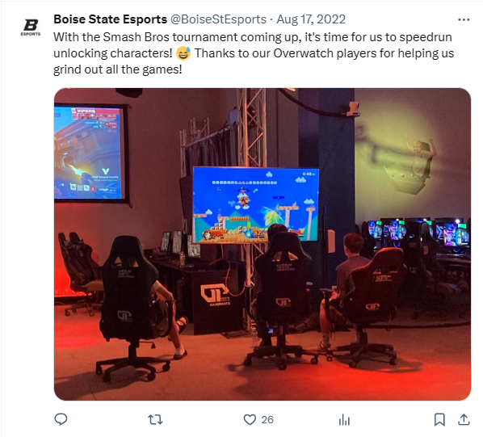

League of Legends Overlay
This is the current League of Legends overlay that Boise State eSports uses for their streams. This allows us to show teams, logos, scores, cameras, and sponsors without taking away from the gameplay. Created in Photoshop.

Aria Strasser
Over my time working at the Boise State eSports center, I worked on several different projects beyond just working in the production room, ranging from graphic design, to social media, to video edits. Here are a few of those that I am most proud of.
This is the current League of Legends overlay that Boise State eSports uses for their streams. This allows us to show teams, logos, scores, cameras, and sponsors without taking away from the gameplay. Created in Photoshop.
These are some of the graphics I created for social media posts. The first was a graphic to introduce and celebrate new players who entered the program. The second was an invite I made for a Smash Bros tournament (characters and character arts by Nintendo). The last one was a trading card that I created for each player that served as a fun surprise. All of these were created in Photoshop.

I was one of the main social media managers at Boise State eSports, posting graphics, pictures, and event notices. Here is one of my favorite posts that I made.
I create video edits for BSU eSports ranging from funny edits and videos, to more serious highlight reels and recaps. I also work as a broadcast member, helping out with streams as either Replay Director or Spectator, and occationally Technical Director or Caster